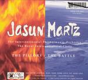

Home Artist links Label link

Jasun Martz - The Pillory/The Battle
| Artist: | Jasun Martz |
| Title: | The Pillory/The Battle |
| Label: | Under The Asphalt UTA 061853 |
| Length(s): | 74+74 minutes |
| Year(s) of release: | 2005 |
| Month of review: | [02/2006] |
Line up
Jasun Martz - keyboards, synths, percussion, drums, electric guitars, bass, woodwinds, horns, vocals
with
many many many others (who unfortunately for them will go unnamed, they are simply
too many).
Tracks
Disc 1:
| 1) | Battle 1 | 22.09
|
| 2) | Battle 2 | 19.41
|
| 3) | Battle 3 | 11.00
|
| 4) | Battle 4 | 6.27
|
| 5) | Battle 5 | 5.40
|
| 6) | Battle 6 | 9.03
|
Disc 2:
Summary
One could write a book about this album, its concept and its inception.
Some anecdotal information: the idea came from running
down a mountain on Galapagos, the album features instrumentalists
from all over the world, and a huge number too. This is
indeed a virtual orchestra, since the musicians never met up.
The double cd package is an extensive one, no trouble spared.
To be sure, this is an album different from the excellent The Pillory
that Martz released on Ad Perpeteum Memoriam in 1994.
The music
The double album is split into seven Battle's. the last of which takes
up the whole second cd. The first of these battles is also quite lengthy.
A soundscape slowly swells, this is music for headphones only. Then like
horns that sound at dawn, the mellotrons set in, but still very much in
the back. The musical approach continues to be very low key, with a continuous
rumbling the back, with occassional outburst, something between icy mellotrons and transformed choirs. This dark ambient/tone poem feel is strengthened by the
industrial sounds that sometimes enter and leave the picture.
Slowly, string instruments enter the picture, but not playing any simple melody,
but conveying the creaking of solitary swings. Then the violins set in
together building up a tension, swelling and swelling. Cymbals come in too,
and indeed we have moved into an orchestral setting now.
Halfway though we seem to be back at square one, and now mellotrons definitely
set in. There is a strong sense of sadness that pervades. The next passage
introduces more melodic elements, a bit on the dark romantic side even. For some
reason I was even reminded of Genesis, moodwise. Slowly, the orchestra
takes more form again, although it seems parts of the music are synths and not
all acoustic strings. The sense of sadness, which may be too soft a word,
returns. Then we are back in the industrial side of things, with rumbling percussion.
Battle 2 opens forthrightly, and if you adapted your volume setting to part 1,
part 2 may be a bit of a scare at first. The music is indeed much more
orchestral here, with a somewhat oriental sound. This Chinese feel also
gives rise to some sharp and harsh sounding elements. The music can be likened
to the type of orchestral music that comes with a recent Hollywood thriller:
plenty of tension, not too melodic and not too easy either. Of course, it is
a different story when you have to do without pictures, but Martz certainly
manages. Modern classical music easily gets to quite a jumble of sounds
and instruments, and I have to admit that that is the case here too. But there
is room to breathe. In the latter half the song becomes more up-beat, very
percussive in fact, soon replaced by choir vocals. Thus is the song ends
in a stately, subdued fashion. Emotionally, the first track did make more of an impression.
Time for percussives on Battle 3, on which we also hear plenty of ethnic instruments.
Except for the suonas (might this be that ethnic wind instrument that I hear?) and the violins, Martz plays everything here. It shows that at heart he is a percussionist.
This song is indeed quite close to ethnic progrock like Paranoise and maybe
even Alamaailman Vasarat. There is indeed a lot of energy here. Towards the end
we get what seems to be a solo on something between a synth, a flute and a guitar.
Maybe that is the so called suonas. Freaky.
Battle 4 is a total contrast. Here the groove of 3 has been replaced by total
anarchy. Everybody is doing something different at the same time. There is a
soft spot in the middle, where the same happens but at a lesser pace and volume.
This is very much improv territory, with a dominance of percussion.
Battle 5 is totally different again: a pipe organ is the dominant factor. The music
is dramatic. The first disc closes with Battle 6 (of course). This is a very slow
moving, ponderous piece, going back to the opening of the first track.
As I told earlier, disc 2 is filled with the seventh battle, 74 minutes long.
This piece is one long exercise in industrial/dark ambient with relatively
small incremental changes throughout. The music can be quite noisy. In fact, many
people will consider this piece not to be music at all, just sounds. Indeed, it
is hard to make emotionally connect to these sounds, at least for me.
There is some church organ in places that raises expectations of a kind,
but whatever it is, it does not seem to develop. The end is neo-classical and
rather hectic and bombastic.
Conclusion
Jasun Martz is something else. I guess the word 'eclectic' was invented
for an album such as this. There is a large dose of modern classical music and
dark ambient, with real life orchestra. For some reason I consider part 3
(ethnic prog with a groove) and the church organ of part 5 as exceptional
cases. At first listen the first disc did not do much for me, but it did when
I listened to it with headphones on and concentrated. The music is of the type
that needs to be immersed into. As regards Battle 7 on disc 2, it did not do much
for me, or to me. A collage like piece, slowly developing, like a tone poem with
industrial overtones. Although I do not mind listening to it myself, it is
not something I listen to for my pleasure (contrary to disc 1). As such, I find this
album to be only half a success.
© Jurriaan Hage